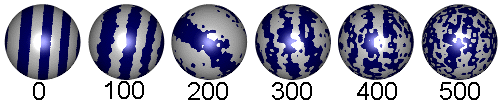
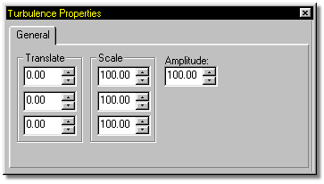

Example Spherical Combiner with Turbulence Applied
Finally, in a class of it's own, is the Turbulence type. Combining two nodes using Checker, Gradient or Spherical combiners will tend to give a material perfect edges where the combined materials meet. Turbulence makes it possible to perturb these perfect edges for a more organic or natural appearance. Turbulence has it's own set of adjustable attributes.
Turbulence has it's own set of adjustable attributes.

Turbulence occurs in a 3D space. It can be moved through this space by using the X, Y & Z Translation values.
Turbulence can be scaled in any of the three directions by entering values in the X, Y & Z Scale parameters. This causes the interaction where materials meet to be even more pronounced and organic in the direction of the scale.
Increasing the amplitude causes even more random interaction at the junction where two materials meet. In conjunction with increased scaling, increased amplitude can become so chaotic that the combination method is barely recognizable. This is very good for organic looking materials.
To remove turbulence, select the turbulence node, then press the Delete key.
Related Topics:
About Materials
Attributes
Combiners